About
AYHAK is a community project started by Anyuan native speakers. We work by a few simple principles:
- Speakers take part as collaborators
- Every town and village's way of speaking counts. There is no single "correct" Anyuan Hakka.
- What we make goes back to the community first.
Projects
Sound Guide
A description of the sounds of Anyuan Hakka, with recordings.
Edible Plants of Anyuan
A photo book of local plants with their Anyuan Hakka names and audio, online and in print.
Linguistics in Anyuan Hakka
An introduction to linguistics, taught in Anyuan Hakka for community members.
Speaking Anyuan Hakka
Ten online lessons on Anyuan Hakka, taught in Mandarin and open to everyone.
Join a meetup
Our online meetups are for anyone from Anyuan who wants to keep speaking Anyuan Hakka, wherever they live now. We meet every other Friday evening (Beijing time) on Tencent Meeting: half free chat, half a chosen topic.
Add the schedule to your calendar: 2026 · 2025
To join, email us for the meeting link.
Questions
- Is Anyuan Hakka a language or a dialect?
- In China it is usually called a dialect (方言). It is a variety of Hakka with its own sounds, words, and grammar.
- I'm from Anyuan. How can I take part?
- Come to a meetup, share words or stories from your town or village, or help with recordings. Any level of fluency is welcome.
- I don't speak Anyuan Hakka. Can I join?
- Yes. The upcoming lessons are taught in Mandarin, and listeners are welcome at the meetups.
Anyuan in images
Old town 县城 [ɥʊ̃ŋ⁴⁵.t͡sʰɜ̃ŋ³²⁴]
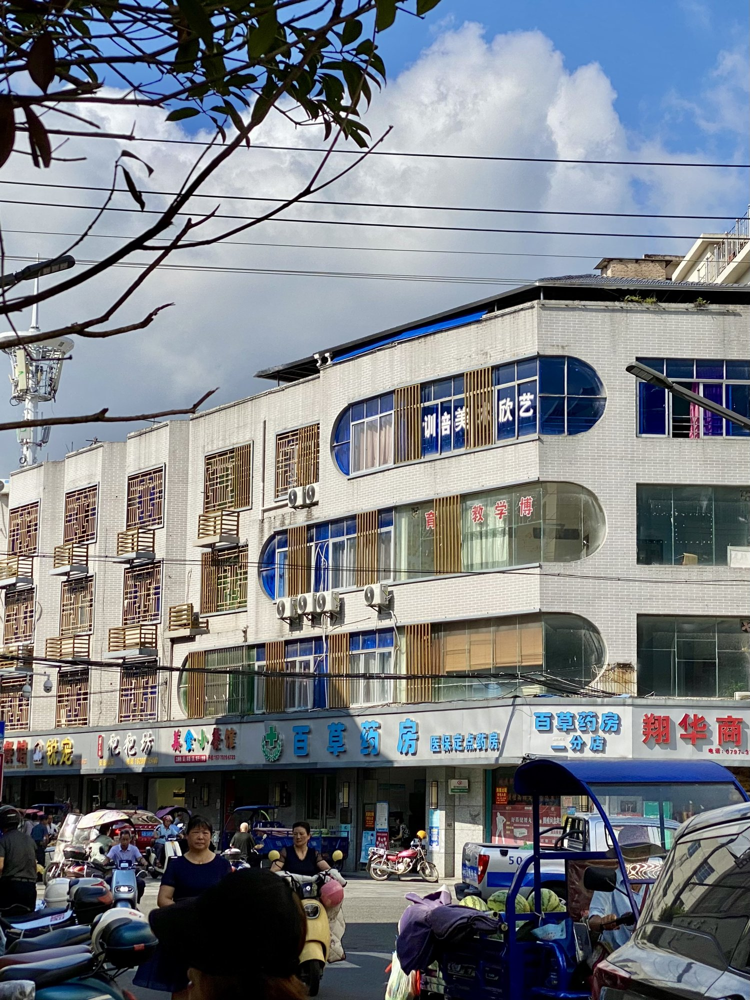
Farmers market 欣山大市场 [siŋ³⁴.sɑ̃³⁴.tʰɑ⁴⁵.si⁵².tsɑŋ⁴¹]
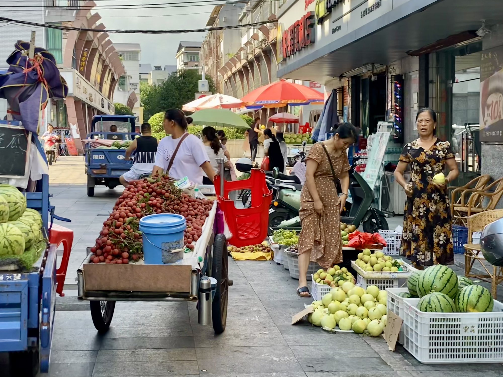
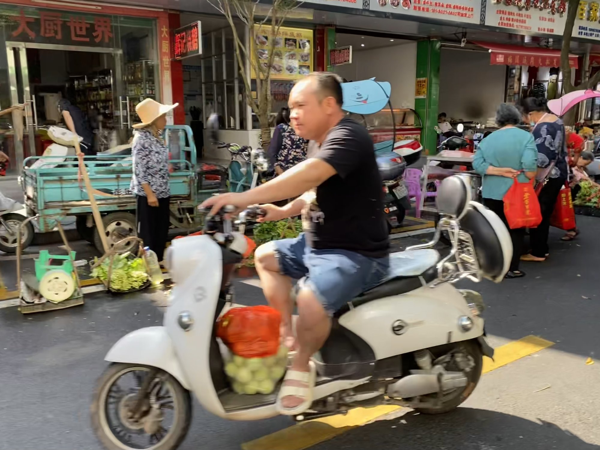
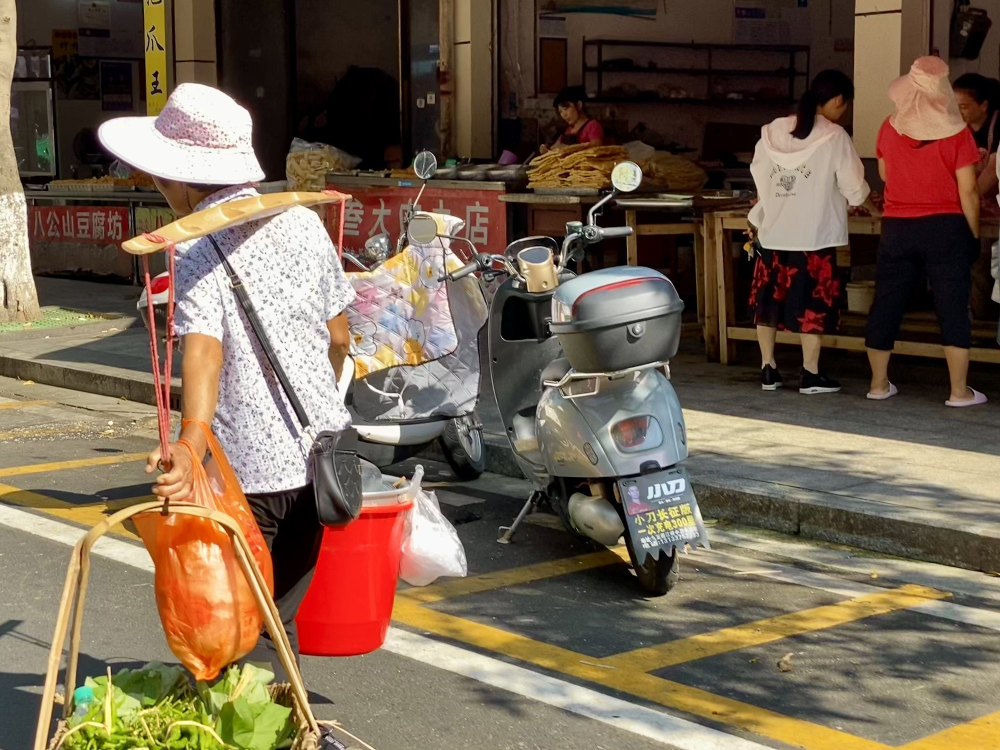
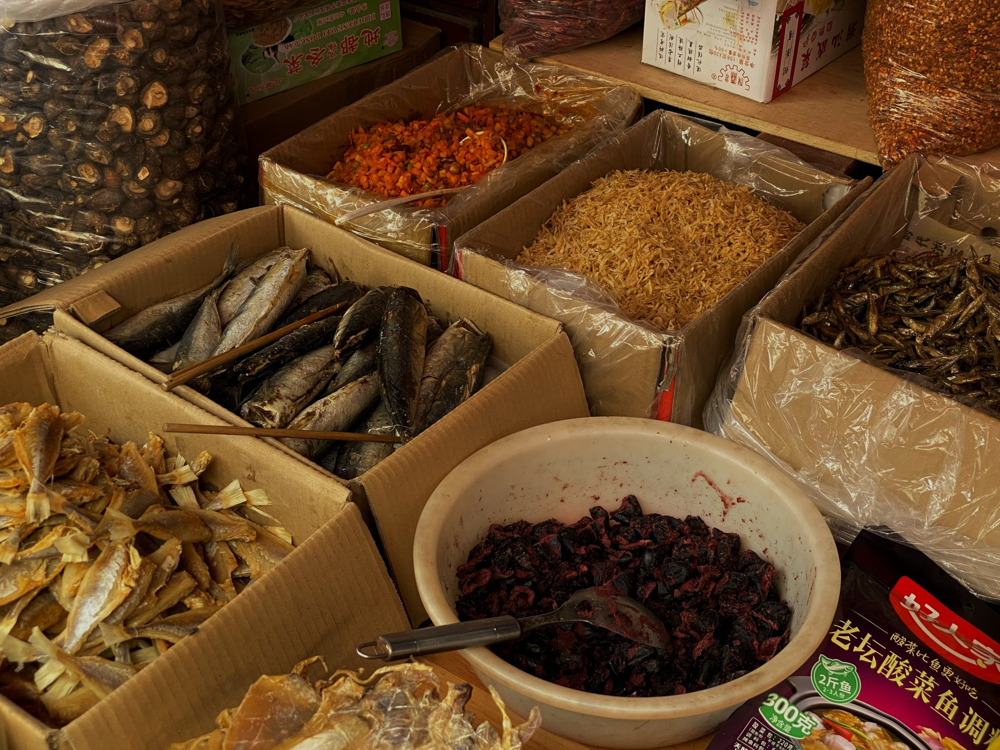
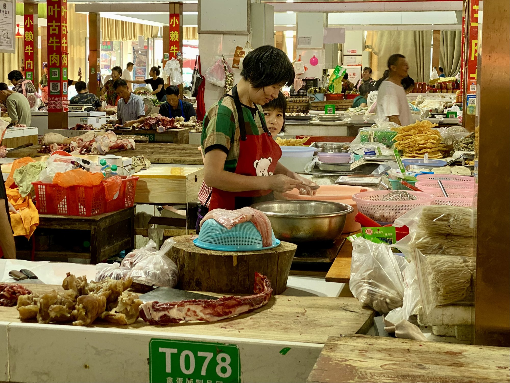
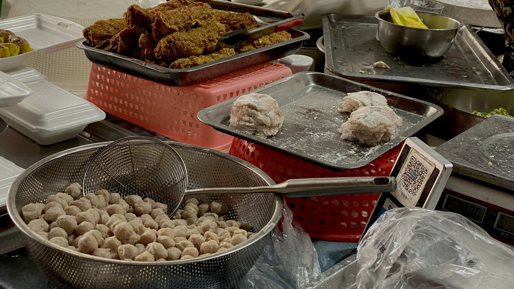
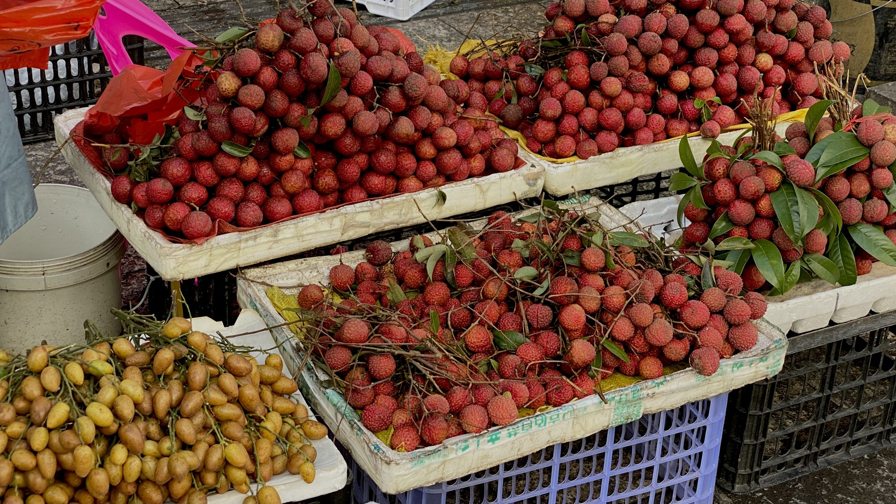
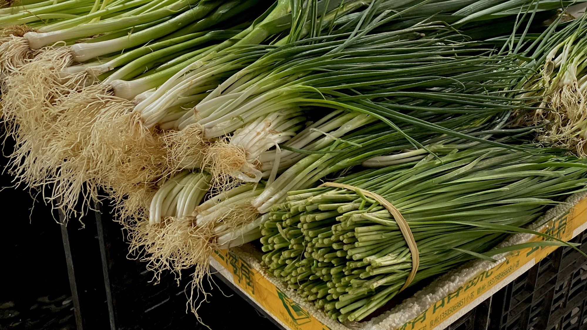
Countryside 屋下 [vu⁴⁵.xɑ³⁴]
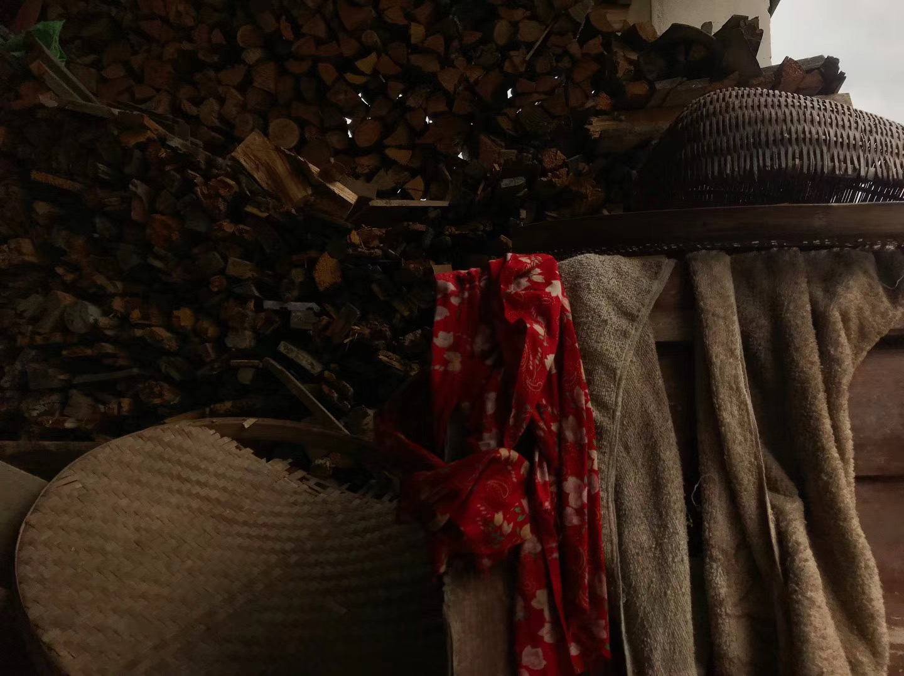
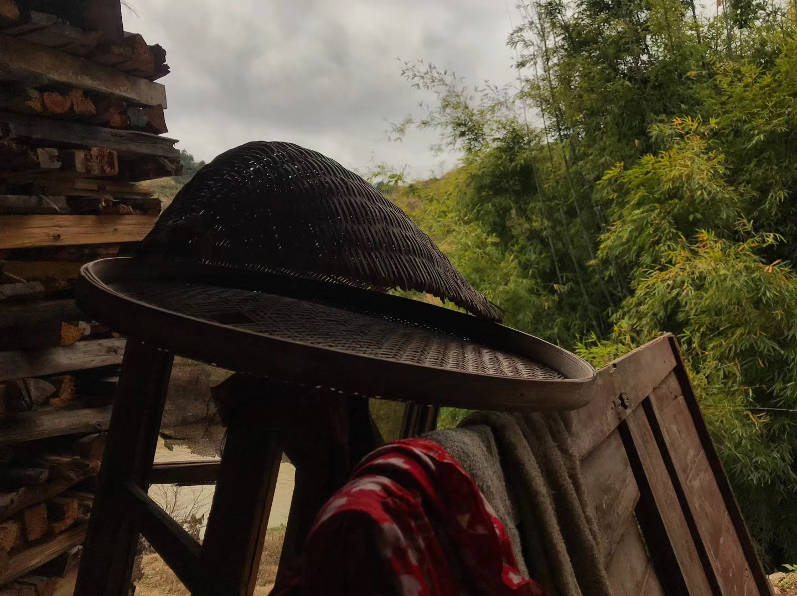
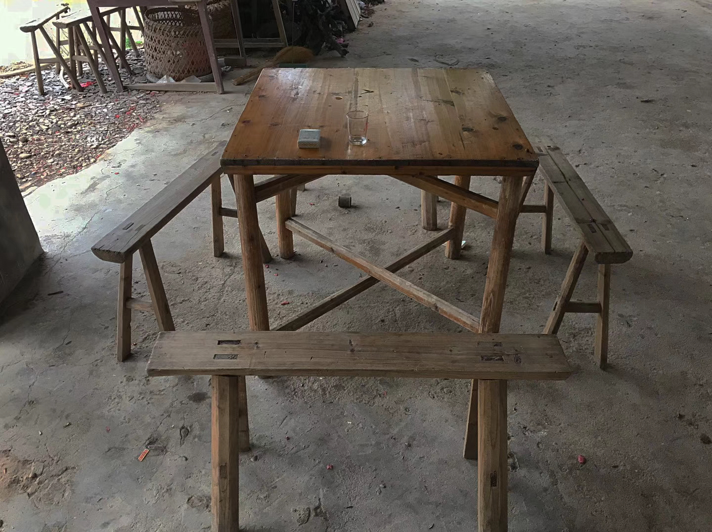
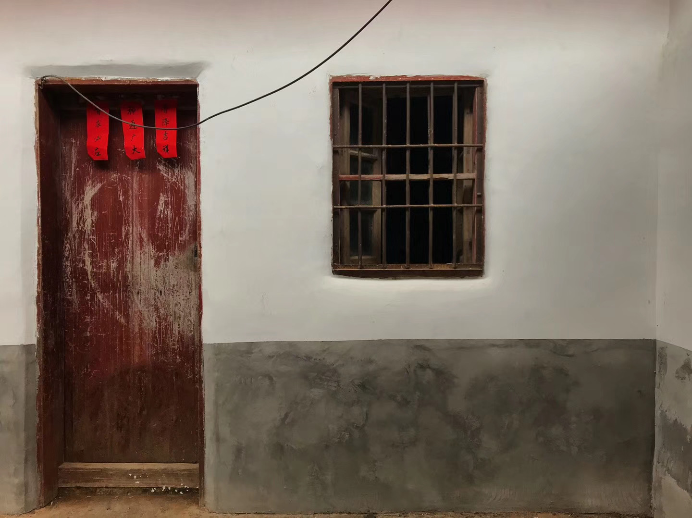
Seasonal produce 瓜果蔬菜
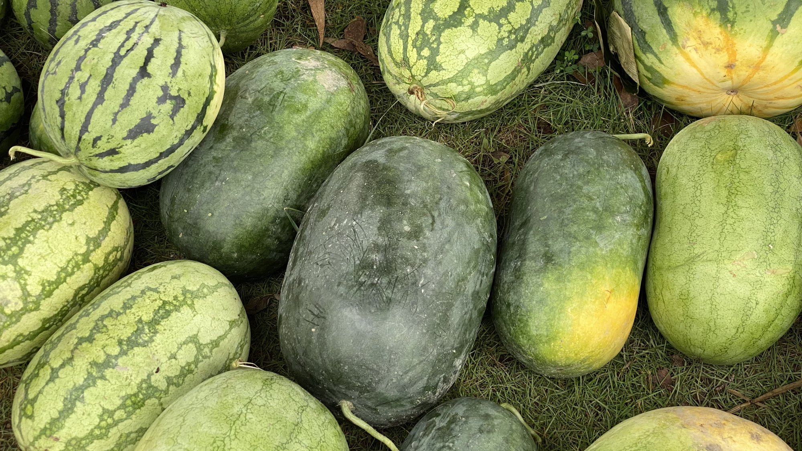
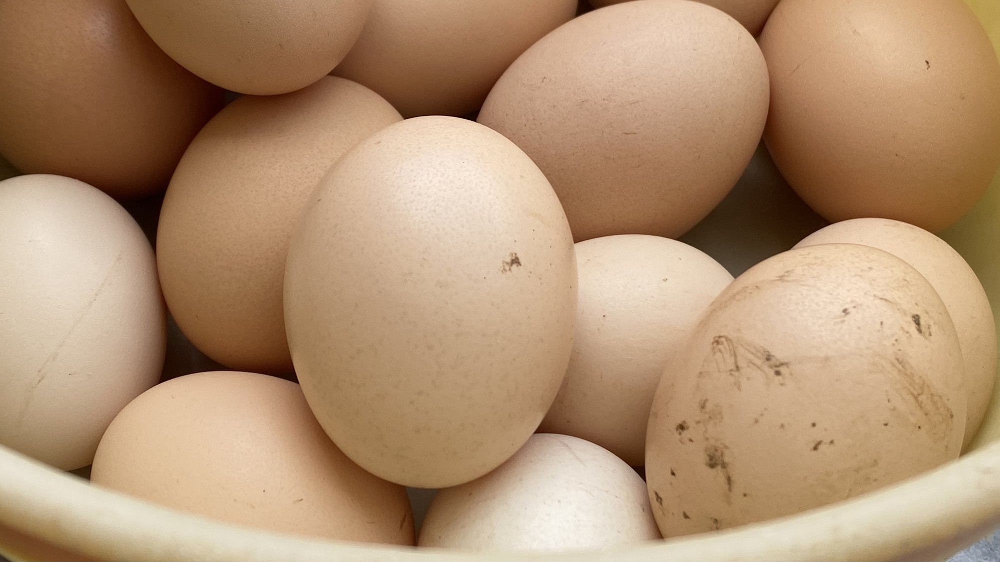